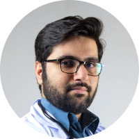

<div class="body">
	<div class="doctor-container">
		
		<div class="doctor-name">Dr. Hanadi Yassin</div>
		<div class="doctor-title">
			MBBS, MD - General Medicine, DM - Cardiology
		</div>
		<div class="position">Interventional Cardiologist</div>
		<div class="years-of-experience">25 Years Experience</div>

		<div class="separator"></div>

		<div class="label">About</div>
		<div class="about">
			An expert in CHIP (Complex High-risk Indicated Procedures), Dr.
			Hanadi Hassan has achieved a documented 91% success rate in Chronic
			Total Occlusion (CTO) Angioplasty, which is unheralded in the region
			and is on par with the best in the field.
		</div>

		<div class="row">
			<div class="col-md-6">
				<div class="label">Phone</div>
				<div class="description">+98-7862-43453</div>
			</div>
			<div class="col-md-6">
				<div class="label">E-mail</div>
				<div class="description">hanadi@gmail.com</div>
			</div>
		</div>

		<div class="label working-schedule">Working Schedule</div>
		<passive-working-schedule
			[Mon]="false"
			[Tue]="true"
			[Wed]="false"
			[Thu]="true"
			[Fri]="false"
			[Sat]="true"
			[Sun]="true"
		></passive-working-schedule>

		<div class="d-flex aic mt-4 mb-5">
			<span>
				<span class="circle active"></span>
				<span class="text-available mr-2">Available</span>
			</span>

			<span>
				<span class="circle"></span>
				<span class="text-available">Not Available</span>
			</span>
		</div>
	</div>
</div>
